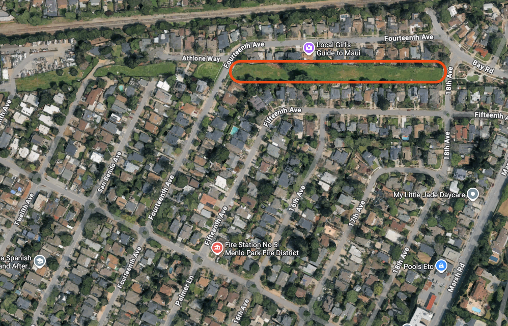
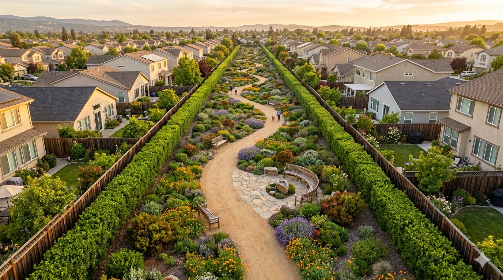

A community-led green space for North Fair Oaks Un espacio verde liderado por la comunidad para North Fair Oaks 北费尔奥克斯社区共建绿地
Community Pilot Project — SFPUC Right-of-Way Proyecto Piloto Comunitario — Derecho de paso de SFPUC 社区试点项目 — SFPUC 通行权用地
The highlighted corridor between 14th Ave and 18th Ave — currently unused SFPUC right-of-way land. El corredor resaltado entre 14th Ave y 18th Ave — actualmente terreno sin uso del derecho de paso de SFPUC. 14街至18街之间的走廊地带（红色标记）——目前未使用的SFPUC通行权用地。

Conceptual site plan. Plano conceptual. 概念规划效果图。
We are proposing a Community-Led Pilot project to San Mateo County and SFPUC to beautify the corridor behind and near our homes. This is about creating a safer, cleaner, and more welcoming North Fair Oaks through landscaping, native plants, and community stewardship.
Proponemos un Proyecto Piloto Comunitario al Condado de San Mateo y a la SFPUC para embellecer el corredor detrás y cerca de nuestras casas. Se trata de crear un North Fair Oaks más seguro, limpio y acogedor a través del paisajismo, plantas nativas y la participación comunitaria.
我们正在向圣马特奥县和SFPUC提出社区主导的试点项目，美化我们住宅附近的走廊地带。通过景观美化、种植本地植物和社区管理，打造一个更安全、更清洁、更温馨的北费尔奥克斯。
Drought-tolerant California native gardens with privacy hedges along fence lines for noise buffering.
Jardines nativos de California tolerantes a la sequía con setos de privacidad a lo largo de las cercas para amortiguar el ruido.
耐旱的加州本地植物花园，沿围栏种植隔音绿篱，保护隐私。
Simple, accessible walking paths to enjoy the space and connect with neighbors.
Senderos simples y accesibles para disfrutar del espacio y conectar con vecinos.
简洁无障碍的步行小径，让您享受绿地、结识邻居。
Benches and gathering spots for conversation and quiet enjoyment.
Bancas y lugares de encuentro para conversación y disfrute tranquilo.
设有长椅和聚会区，供交谠休憩之用。
A comprehensive review of 33 studies by Drs. Crompton & Nicholls at Texas A&M found homes near passive parks see a premium of 8–10% on adjacent properties, with measurable effects up to 500–600 feet away. Earlier reviews found premiums up to 20%. The National Association of Realtors (2023) found 79% of buyers rate park proximity as important, with 78% willing to pay more. In the Bay Area — where green space is scarce — the premium tends to be even higher.
Una revisión de 33 estudios por los Drs. Crompton y Nicholls de Texas A&M encontró que las casas cerca de parques pasivos ven una prima del 8–10%, con efectos medibles hasta 150–180 metros. Revisiones anteriores encontraron primas de hasta 20%. La Asociación Nacional de Agentes Inmobiliarios (2023) encontró que el 79% de los compradores valoran la proximidad a parques.
德州农工大学Crompton和Nicholls博士对33项研究的综合分析发现，被动式公园附近的房屋可增值8-10%，影响范围可达150-180米。早期研究发现增值可高达20%。全美房地产经纪人协会(2023)发现79%的购房者重视公园距离。在绿地稀缺的湾区，增值往往更高。
Crompton, J.L. & Nicholls, S. (2019). "Impact on Property Values of Distance to Parks and Open Spaces." Journal of Leisure Research, 51(2), 127–146. Crompton (2001). Journal of Leisure Research, 33(1), 1–31. NAR (2023). "Community and Transportation Preferences Survey."
Crompton, J.L. & Nicholls, S. (2019). Journal of Leisure Research, 51(2), 127–146. Crompton (2001). Journal of Leisure Research, 33(1), 1–31. NAR (2023).
Crompton & Nicholls (2019). Journal of Leisure Research, 51(2), 127–146. NAR (2023).
No. Under California's Proposition 13, your property taxes are based on your purchase price, not current market value. Your assessed value can only increase by a maximum of 2% per year, regardless of neighborhood improvements. A nearby park increases what your home is worth on the open market without changing what you pay in taxes — you benefit from the equity gain only when you choose to sell.
No. Bajo la Proposición 13 de California, sus impuestos de propiedad se basan en su precio de compra, no en el valor actual de mercado. Su valor tasado solo puede aumentar un máximo del 2% por año, sin importar las mejoras del vecindario. Un parque cercano aumenta el valor de su casa en el mercado sin cambiar lo que paga en impuestos.
不会。根据加州第13号提案，您的房产税基于购买价格，而非当前市场价值。无论社区如何改善，您的评估价值每年最多只能增加2%。附近的公园会提高您房屋的市场价值，但不会改变您缴纳的税款——您只有在选择出售时才会从中受益。
California Constitution, Article XIII A (Proposition 13, 1978). Assessed value increases capped at 2%/year until change of ownership or new construction.
Constitución de California, Artículo XIII A (Proposición 13, 1978). Incremento del valor tasado limitado a 2%/año.
加州宪法第XIII A条（第13号提案，1978年）。评估价值每年增幅上限为2%。
This is a passive park — native gardens and walking paths, not a sports court or playground. Acoustic studies show quiet garden interiors register just 41–50 dBA, comparable to a library. For comparison, a basketball or pickleball court can reach 70–80 dBA. Dense vegetation actually reduces perceived noise by absorbing and scattering sound waves. The WHO and EPA both recommend 55 dBA as the outdoor noise limit — a passive park sits well below that threshold, and below typical residential street traffic (60–70 dBA).
Este es un parque pasivo — jardines nativos y senderos, no una cancha deportiva ni un área de juegos. Los estudios acústicos muestran que los jardines tranquilos registran solo 41–50 dBA, comparable a una biblioteca. En comparación, una cancha de pickleball puede alcanzar 70–80 dBA. La vegetación densa reduce el ruido percibido al absorber ondas sonoras. La OMS y la EPA recomiendan 55 dBA como límite exterior — un parque pasivo está muy por debajo.
这是一个被动式公园——本地花园和步行道，不是运动场或游乐场。声学研究表明，安静的花园内部噪音仅为41-50分贝，相当于图书馆水平。相比之下，篮球或匹克球场可达70-80分贝。茂密的植被实际上能通过吸收和散射声波来降低噪音。世卫组织和美国环保署建议室外噪音上限为55分贝——被动式公园远低于此标准。
Kang, J. & Yang, W. (2005). "Soundscape and Sound Preferences in Urban Squares." Journal of Urban Design, 10(1), 61–80. Yang & Kang (2005). Applied Acoustics, 66(2), 211–229. WHO Environmental Noise Guidelines (2018). EPA outdoor max: 55 dBA.
Kang, J. & Yang, W. (2005). Journal of Urban Design, 10(1), 61–80. Yang & Kang (2005). Applied Acoustics, 66(2). OMS (2018). EPA máximo exterior: 55 dBA.
Kang & Yang (2005). Journal of Urban Design. WHO (2018). EPA 室外限值: 55 dBA。
The project is community-led. Maintenance will be handled by neighborhood volunteers and local advocates, with financial sponsorship to cover professional landscaping needs.
El proyecto es liderado por la comunidad. El mantenimiento estará a cargo de voluntarios y defensores locales, con patrocinio financiero para cubrir necesidades profesionales de jardinería.
该项目由社区主导。维护工作将由社区志愿者和当地倡导者承担，并有赞助资金用于专业园林维护。
Studies consistently show that well-maintained green spaces reduce nuisance activity and illegal dumping. By replacing an unused lot with an active, cared-for community space, we increase natural surveillance — what urban planners call "eyes on the street" — making the block feel safer and more welcoming for everyone.
Los estudios muestran consistentemente que los espacios verdes bien mantenidos reducen las actividades molestas y los depósitos ilegales de basura. Al reemplazar un lote sin uso con un espacio comunitario activo y cuidado, aumentamos la vigilancia natural, haciendo que la cuadra sea más segura y acogedora para todos.
研究一致表明，维护良好的绿地能减少滋扰活动和非法倾倒。将闲置空地改造为有人照料的社区空间，可以增加自然监控——城市规划师称之为"街道之眼"——让整个街区更安全、更宜居。
Branas, C.C. et al. (2018). PNAS, 115(12), 2946–2951. South, E.C. et al. (2018). JAMA Network Open, 1(3).
Branas, C.C. et al. (2018). PNAS, 115(12), 2946–2951. South, E.C. et al. (2018). JAMA Network Open, 1(3).
Branas 等 (2018). PNAS, 115(12). South 等 (2018). JAMA Network Open, 1(3).
Nothing. The project is funded through local business sponsorships and community support. Neighborhood businesses will sponsor this space because a thriving, beautiful block is good for everyone. Your only contribution is your voice and your input.
Nada. El proyecto está financiado a través de patrocinios de negocios locales y apoyo comunitario. Los negocios del vecindario patrocinarán este espacio porque una cuadra bonita y próspera es buena para todos. Su única contribución es su voz y su opinión.
不需要。该项目通过当地企业赞助和社区支持来资助。社区企业愿意赞助，因为一个美丽繁荣的街区对所有人都有益。您唯一需要贡献的就是您的意见和想法。
Active green spaces dramatically reduce illegal dumping and litter. A cared-for space signals community pride and discourages misuse.
Los espacios verdes activos reducen drásticamente los depósitos ilegales de basura. Un espacio cuidado señala orgullo comunitario y desalienta el mal uso.
活跃的绿地能大幅减少非法倾倒和乱扔垃圾。精心维护的空间彰显社区自豪感，遏制不当使用。
South, E.C. et al. (2018). "Effect of Greening Vacant Land on Mental Health." JAMA Network Open, 1(3).
Neighborhoods with shared green spaces report higher levels of social connection and mutual trust. A safe, welcoming space where families can gather, kids can explore nature, and neighbors can get to know each other.
Los vecindarios con espacios verdes compartidos reportan mayores niveles de conexión social y confianza mutua. Un espacio seguro y acogedor donde las familias pueden reunirse, los niños pueden explorar la naturaleza y los vecinos pueden conocerse.
拥有共享绿地的社区报告了更高水平的社会联系和互信。一个安全温馨的空间，家庭可以聚会，孩子可以探索自然，邻居可以相互认识。
Access to nearby green space is linked to lower stress, reduced anxiety, and improved mental health outcomes.
El acceso a espacios verdes cercanos está relacionado con menos estrés, menos ansiedad y mejor salud mental.
附近有绿地与减轻压力、缓解焦虑和改善心理健康密切相关。
South, E.C. et al. (2018). JAMA Network Open — greened lots associated with significant reduction in depression.
Native plants reduce water usage, support pollinators, and help manage stormwater runoff naturally.
Las plantas nativas reducen el uso de agua, apoyan a los polinizadores y ayudan a manejar el agua de lluvia de forma natural.
本地植物减少用水、支持传粉者，并自然地管理雨水径流。
Your voice matters. Let us know how you feel about the Corridor Park project. One vote per household. Su voz importa. Díganos qué opina del proyecto Parque del Corredor. Un voto por hogar. 您的声音很重要。请告诉我们您对走廊公园项目的看法。每户一票。
We want to hear from you. This is a project by the neighborhood, for the neighborhood. What would you like to see? What are your concerns? Want to become a Founding Neighbor?
Queremos escuchar de usted. Este es un proyecto por el vecindario, para el vecindario. ¿Qué le gustaría ver? ¿Cuáles son sus preocupaciones? ¿Quiere ser un Vecino Fundador?
我们希望听到您的声音。这是一个由社区发起、为社区服务的项目。您希望看到什么？您有什么顾虑？想成为创始邻居吗？
Or come talk to us at the next Sidewalk Chat! ¡O venga a hablar con nosotros en la próxima Charla en la Acera! 或者来参加下一次人行道聊天活动！
Download our community flier and share it with neighbors, local businesses, and friends. Descargue nuestro folleto comunitario y compártalo con vecinos, negocios locales y amigos. 下载我们的社区传单，分享给邻居、当地商家和朋友。
📄 Download Flier (PDF) 📄 Descargar Folleto (PDF) 📄 下载传单 (PDF)